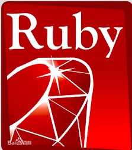
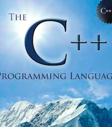
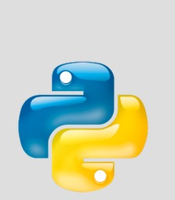

C
老式电脑，并不是指的历史上第一台图灵机计算机，也不是指第一台体积有几间屋子大小的那台ENIAC电脑，也不是第一台IBM
pc机，而是苹果公司的Apple Monitor III。
RUBY

小鱼儿（注：Pilot
Fish，本文主角的名字）的公司聘请了一个第三方公司为他们的用户进行Window7培训。但结果却发现这个公司并不能很好的胜任这种工作。
JAVA
技术服务工程师小鱼儿（注：Pilot
Fish，本文主角的名字）接到一个任务，需要去外地的一个客户那里检查他们的电脑设备。那里的客户抱怨他们的电脑屏幕会时不时的颤动。
JAVASCRIPT
关于拖延症的话题我在Hacker
News上不断的看到有人提出来(你也读了，不是吗？)，感觉有必要将我是如何跟拖延症做斗争的方法分享给大家。然而，我这里说的主要是针对程序员/美工，但其实任何人都可以使用。首先最重要的….
C++

可事实上问题不在于此。编程，就跟写作、绘画、作曲一样，首先是一种创造性的活动，而不是一个种技术工作。当然，
对一种技术或编程语言的不断练习和保持熟悉很重要，这其实就是在学习使用工具和技法，但它并不会让你本质上变成一名更优秀的程序员。
PYTHON

这里的Bash脚本技术技巧最初是来自谷歌的“Testing on the Toilet” (TOTT)。这里是一个修订和扩增版本